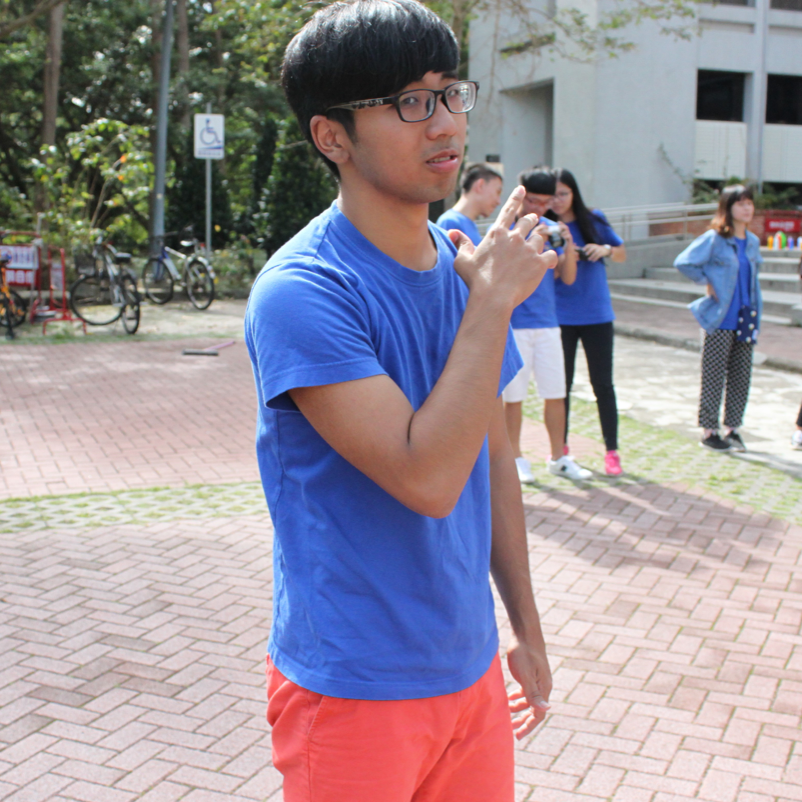

公司職員簡介
姓名 : 吳政鴻
職稱 : 末代劇一黑股長、夜教、冗宣傳
入社年份 : 2015-2017
特殊表現 : 黑旋風 黑騎士
員工表現

林勳諺
畢業快樂祝你清大備上
祈瑋
謝謝宣傳股的時候你帶了很多零食來很照顧我們 ~畢業快樂喔!
家林
雖然黑又重考，夜唱仍不忘讀晶缺，感覺被當很多科，但真的是成功的讓我在社團有歸屬感的學長，每次都很期待股聚的主題，大家一起夜唱一起吃宵真的很爽，劇一絕對是感情最好的<3這絕對在我的記憶中能佔有很大的地位，祝你清大備上，不然又要多一年惹
依潔
冬令宣傳真的ㄎㄧㄤ 到爆炸，感謝你總是會來關心我糟糕的剪片技術，還有很多驚喜零食小點心，畢業快樂。
妤
當了你兩次的股員，你對股員很照顧也很關心，畢業快樂（你應該可以畢業八），不知道你有沒有研究所可以念只好祝你一路順遂，有考研有差還會算數學唷
珊羽
劇一棒!大一遇到的第一個股長之一，真的是很的用心，讓我能有很豐富的社團夜生活(?)，到現在回頭看還是覺得進劇一真的很幸運，畢業快樂啦。
皓淳
在劇一的股聚的真的是有史以來直到現在未來都會是我心目中最炫炮的，第一次放開演戲或是開啟了第一次的夜唱，都是因為有你這個很用心的股長，雖然大二之後常常在課堂上看見你讓同為材料系的我相當的惶恐，幸好你還是順利的畢業了吧! 真心祝你畢業~